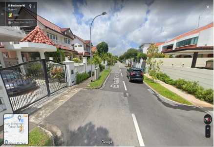
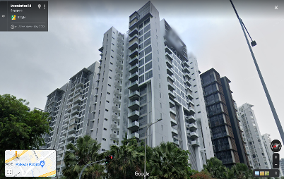

Analysis
Methods and Recommendations
For our analysis, our group will be analysing both the target audience served and the efficiency of each TEL stage 4 individually.
To analyse the target audience served, our group analyzed the type of buildings and residents living within each walkable iso-area created. We then gathered information about the cost of construction and population’s utilization of within each MRT Station to determine whether the cost of development outweighs its benefits to taxpayers and if there is sufficient utilization of MRT services to justify the construction of the MRT Station. We have also taken into consideration future developments that will take place within each area before arriving at our decision.
To measure the efficiency, our group has come up with a calculation to measure the efficiency, which we have dubbed the walkability probability. To do this, we first find the ratio of buildings in each iso-area band compared to the total number of buildings in the iso-area. To simplify the process, we assumed that the closest point to the MRT station would be considered. For instance, if building A spans both the 200 – 400m band and the 400 – 600m band, we would assume that it was part of the 200 – 400m band.
Next, our group took reference from Olszewski and Wibowo (2005) to determine the penalisation score for each band. The penalisation score is used to calculate the expected likelihood of a person walking to the MRT station. As Figure 1 shows, men and women have different probabilities of walking to the MRT. Hence, our group has taken the approximate average of the two probabilities and applied it as the penalisation score.

Note: Graph depicting the probability of walking to MRT as a function of difference in walking distance between walk and feeder modes. From “Using equivalent walking distance to assess pedestrian accessibility to transit stations in Singapore” by Olszewski, P., & Wibowo, S. S., 2005, Transportation Research Record: Journal of the Transportation Research Board, 1927(1), 38–45.
| Iso-area band range | Penalty |
|---|---|
| 0-200m | 0.9 |
| 200-400m | 0.8 |
| 400-600m | 0.6 |
| 600-800m | 0.4 |
The expected likelihood of people walking would be derived through this formula:
No of buildings in Iso-area band _____________________________________ x Penalty
Total number of buildings in iso-area
After which, the expected likelihood of people walking would be added across all bands and from there, the total walkability probability would be derived.We will consider an MRT station to be efficient if it has a walkability probability of over 50%. Afterwards, we will consider any possible outside factors which could reduce the effectiveness of the MRT station.Using this calculation, our group will not only be able to calculate the expected efficiency of each MRT station according to the probability that someone will walk to the station, or the walkability probability, but we will also be able to analyse the proportion of buildings in each band and identify the band with the highest walkability probability.
TE22A: Founder’s Memorial

Background
Located between Tanjong Rhu and Gardens by the Bay stations along the TEL, Founders Memorial MRT station was meant to improve accessibility for visitors to the Bay East Garden, where the memorial will be located. The station is built to serve expected upcoming residential and recreational developments in the area and showcase the contributions of modern Singapore’s founders.
The China Railway First Group Co, Ltd was awarded the contract of S$242.4 million in June 2016 for the conversion of the existing TEL facility building at Bay East Garden to build the Founders’ Memorial Station, where construction begins in 2019.
With future development plan to be completed in 2025, the memorial site will be housed in a garden, within which an indoor gallery will be built. There will likely be permanent and temporary galleries, as well as a visitor center and multi-purpose rooms which could host school excursions and citizenship ceremonies.
Target Audience
The expected target audience of the Founder’s Memorial is likely to be visitors, school students, small group of private residences and for ceremonies purposes. As clear plans for development of the area have not yet been planned, it is remains unclear the exact future target audience, such as residential buildings or commercial buildings.

Nonetheless, at the current moment there are some private residences which fall within the iso-area created. 67% of all buildings which fall within the iso-area are private residential buildings. With reference to Google Street View, we can see that these buildings are condominiums within Tanjong Rhu, which lies across East Coast Parkway.

Efficiency
Based on current developments in the area, we have calculated the following:

From the calculations, we can see that at the current state of development at Founders’ Memorial, the station has a poor walkability probability of 43.33%, which is the lowest out of all stations analysed and below the threshold set by our group. Furthermore, the greatest proportion of buildings within the station’s iso-area is within the furthest band, which also has the highest walkability probability. This indicates poor planning for the current developments in the area, with buildings being served lying far from the station where riders are least likely to walk to the station. This is further impacted by fact that the residential buildings within the iso-area are within the affluent Tanjong Rhu area, where residents are likely accustomed to using cars as their main form of transportation.
Additionally, the walkability probability has an inverse relationship from the curve that Olszewski and Wibowo (2005) had plotted and further points to the poor location of the station as in reality less people are likely to be willing to walk to the MRT station.
At the current stage, we can conclude that Founder’s Memorial will not be efficient once built. However, considering that the area is expected to be developed in the future with the expiration of the Marina Bay Golf Course’s lease, we may see a better efficiency rating in the future.

Cost to Benefit Analysis
The MRT station’s iso-area currently consists of only a few of private residences. LTA had contracted China Railway First Group with a S$242.4 million contract to build Founders Memorial MRT station. At the current stage of development, Founders Memorial MRT station is not cost effective, as its poor efficiency does not justify the amount taxpayers would have to pay for the development of the area.
Future Developments
However, at Marina East area also features the Marina Bay Golf Course, which will see its lease expiring in July 2024, upon which the government take would back the land. It will be likely the area would be put up for tender. With construction time taking up to three years, it is expected that the area could be developed as a mix of residential and commercial projects over a gradual developmental period of 10-15 years. However, URA does not have any clear plans for development of the area due to the area being marked as a reserved site.
Recommendations
In policy making, once the government has initiated and legitimise the development of the MRT station project with a private partnership contract, it is unlikely that any changes would be made with existing plans to develop the MRT station. If the MRT station is completed and commuter utilisation is low, the cost of maintaining the station and it services would become a recurrent cost on public expenditure.
Hence, we strongly suggest that the government continue its plan to develop the area and consult with other stakeholders such as HDB, URA and private companies who are interested in tendering or leasing. This is to ensure that the MRT station is built with efficiency in mind and takes into consideration public utilisation and demand within the iso-area of Founders Memorial MRT Station. Otherwise, it will become a project that is poorly planned.
TE23: Tanjong Rhu
Background
The construction of Tanjong Rhu MRT station has been awarded to Bachy Soletanche Singapore Pte Ltd – Wai Fong Construction Pte Ltd Joint Venture at a contract sum of approximately S$294 million (LTA, 2016). Construction has started in 2016 and will be completed and operational in 2024. From Google Maps, it will primarily serve residents living in condominiums such as Casuarina Cove and Tanjong Ria.
On 15 August 2014, LTA proposed that Tanjong Rhu station would be part of Thomson–East Coastline (TEL) and is expected to be completed in 2024.

Target Audience
As shown from the pie chart and with reference from Google Street View, the vicinity of Tanjong Rhu MRT station largely comprises of Private Residences at 72% of all buildings. These private residences mainly comprise of condominiums such as Casuarina Cove. Therefore, it can be said that Tanjong Rhu will be mainly serving the middle to high class.
Efficiency
Based on current developments in the area, we have calculated the following:

From the calculations, we can see that Tanjong Rhu has a high Walkability Probability at 70.62%, which is also the highest out of all stations. This can be attributed to the 200 – 400m band having the greatest proportion of buildings and the highest expected likelihood of people who will walk to the MRT station. This indicates that Tanjong Rhu MRT station will be highly efficient when it opens.
However, considering the characteristics of the neighborhood around the station, it is quite likely that Tanjong Rhu MRT station will not achieve this calculated efficiency at launch as it will take some time for possible riders to change their habits towards using public transportation. Thus, we can conclude that while the station is likely to be highly efficient, it will take time to reach a moderate to high efficiency due to the characteristics of the area.
Cost Benefit Analysis
At an initial observation, it may seem that Tanjong Rhu’s cost of S$294 million is not justified because their target audience are mainly the residents staying in private residential. The cost would only seem justifiable when a wider range of the public is served not just private residential or if the MRT station manages to serve a higher population density. However, one must note that condominiums are like HDBs in terms of the quantity of people they serve. Both have high population densities as opposed to landed properties. Therefore, the cost of Tanjong Rhu MRT station is justified to a certain extent.
Future Developments
It can be seen from the URA master plan 2019 that Kallang, which is near Tanjong Rhu, will have new additions in terms of facilities for the residents to enjoy. Facilities such as Kallang Alive and Kampong Bugis will provide amenities such as a sports area and waterfront park for people to enjoy. It is also expected to serve not just the Kallang residents but also Tanjong Rhu residents. Therefore, building a Tanjong Rhu MRT station would make these facilities more accessible to the resident of Tanjong Rhu who would want to travel to Kallang to enjoy.

TE24: Katong Park
Background
On 15 August 2014, LTA proposed that Katong Park Station would be part of Thomson–East Coastline (TEL) and is expected to be completed in 2024. Shanghai Tunnel Engineering Co. (Singapore) Pte Ltd was awarded the contract to design and build the Katong Park MRT Station at a sum of S$293 million, and construction has started in 2016. It is built underneath Meyer Road, at the junction of Fort Road and Tanjong Rhu Road, to bring rail connectivity to condominiums and landed houses around Meyer Road.
Target Audience
Katong Park Station’s main target audience is to serve private residences living in mainly low-rise private residential buildings with smaller clusters of condominiums. There is also little development within the area beyond private residential buildings at the current moment.
Based on the pie chart and with reference to Google Streetview, we can observe that a large proportion of buildings are low-rise private residential buildings with smaller clusters of condominiums. It would suggest that the area of Katong Park has a lower population density and hence population compared to areas where there are high-rise buildings such as HDB flats and condominiums. This in theory would mean a lower utilisation of MRT services.
Our analysis also suggests that the building of Katong Park MRT Station will have a slightly lower cost effectiveness and efficiency in comparison to other regions where there is high rise HDB flats where utilisation could be significantly higher.
With reference from Map view and Streetview on Google Map, we can confirm that a large proportion of buildings are a mix of low-rise private properties and small clusters of condominiums along the Katong Park MRT Station.

Efficiency
Based on current developments in the area, we have calculated the following:

From the calculation, we can see that Katong Park MRT station has a decent Walkability Probability of 54.28%, which implies that the majority of possible riders in the area are willing to walk to the MRT station. While it does not have the best Walkability Probability score, it is passable and likely to increase over time.
However, the walkability probability has an inverse relationship from the curve that Olszewski and Wibowo (2005) had plotted. This implies that in reality less potential users would walk to the station than calculated due to the distance, as band with the greatest proportion of buildings is the band furthest away from the MRT station, where the penalty is 0.4. This is compounded by the characteristics of the area, with 86% of buildings being private residential buildings and hence residents are likely used to using the car as their main form of transportation.
We can conclude that Katong Park MRT station, despite the Walkability Probability calculation labelling it as effective, is likely to have a real effectiveness below 50% due to the characteristics of the area and the distance away from the band with the largest proportion of buildings.
Cost to Benefit Analysis
The iso-area of the MRT station contains mainly of low-rise private residential buildings with smaller clusters of condominiums. This could make the MRT station less effective due to lower utilisation and ridership because of the low population density. The cost of development contracted by Shanghai Tunnel Engineering Co. (Singapore) Pte Ltd with a S$293 million contract to build is still slightly high in consideration of the population density. Justifying that taxpayers would have to pay for the development of the area may be difficult as few would benefit from the MRT station. However, if there are future developments of high-rise condominiums, it would make the project more viable by generating a higher utilisation of MRT services.
Future developments
Within the area of Katong Park there are clusters of high-rise condominiums that are under construction or planned for construction. In future, when more developments are complete, there could be higher utilisation of services as new flat owners move in to start their families within the area.
Recommendations
Within the area, there is a lack of development of HDB Flats. The distribution of residential buildings within most of the TEL Stage 4 Lines are mostly low-rise private residential according to our data. It suggests a great issue of equity and disparity between the affluent population living within the east region of Singapore compared to other regions where HDBs are a common sight.
The reason why there are few developments within the area is because existing low-rise private properties are taking up a lot of space within Katong Park area. At the current moment, the lack of space in the area makes it impossible for new developments to occur unless the government decides to reclaim the land after the lease expires to make way for new developments.
TE25: Tanjong Katong
Background
On 15 August 2014, LTA proposed that Tanjong Katong station would be part of Thomson–East Coastline (TEL) and is expected to be completed in 2024.
On 21 March 2016, LTA had awarded the contract to Woh Hup (Private) Limited at a sum of S$146 million for the design and construction of Tanjong Katong MRT Station, and it is expected to be complete in 2024.
Target Audience
Tanjong Katong MRT Station’s main target audience are private residents living in mainly high-rise condominiums and low-rise private residential buildings, with a small number of public residents living in HDB Flats.
Based on data and Google Maps, a large proportion of 86% building are clusters of high-rise condominiums and large numbers of low-rise private residential buildings within the iso-area of the MRT station, with the remaining 3% being a small cluster of high-rise HDB flats. This suggests that there would a relatively good utilisation of Marine Terrace MRT services as there are a good mix of high and low population density buildings, which could in theory suggest that there are more residents utilizing the MRT station due to the larger population.

Efficiency
Based on current developments in the area, we have calculated the following:

From the calculation, we can see that Tanjong Katong MRT station will be efficient, with a Walkability Probability of 58.36%, which implies that most possible riders are willing to walk to the station.
However, the band with the largest proportion of buildings within the walkable iso-area is the band furthest away from the MRT station at 600 – 800m. With a penalty score of 0.4, it implies that in reality most users would not walk to the MRT station. Additionally, as private residential buildings take up the bulk of properties in the iso-area, it would take time for residents in the area to get into the habit of using public transportation. Nonetheless, with a Walkability Probability approaching 60%, these factors are unlikely to push the actual efficiency below 50%.
Thus, we can conclude that Tanjong Katong MRT station is efficient, although it may take some time to ramp up to acceptable levels.
Cost to Benefit Analysis
The Tanjong Katong MRT station iso-area contains mainly clusters of high-rise condominiums and many low-rise private residential buildings. This suggests that there could be higher utilisation and ridership. This makes the cost of development of S$146 million highly justifiable with consideration of the reasonable population density and size within the area.
Recommendations, Long-Term Contracts and Risk
However significant consideration would have to have been taken place prior to the contract to ensure that a smaller company could deliver on its promise based on the Design, Build, Finance and Operate (DBFO) concept in long term contractual agreements.
In governmental and private partnership contracts, LTA and SMRT would have to undertake considerable and unpredictable risk in the contract to monitor and oversee the contractual agreement to ensure the successful delivery of the stages of development. As compared to a larger firm like Samsung, China Railway or Shanghai Tunnel Engineering, which would have technological and engineering capacity to carry out such a large-scale project and have contractual insurance for a liability coverage.
In summary, although Tanjong Katong MRT Station is very economical and efficient (serving a good mix of high-rise and low-rise private properties with a decent Walkability Probability), there are significant risks being undertaken by LTA. In the event of a long-term project failure, a large portion of responsibility would be borne by the government who manages taxpayers’ money to fund these projects and would result in huge reputational damage. Hence, LTA would need to have good oversight of the project
TE26: Marine Parade
Background
On 15 August 2014, the Land Transport Authority (LTA) proposed that Marine Parade station would be part of Thomson–East Coastline (TEL) and is expected to be completed in 2024.
In November 2015, Samsung C&T Corporation was contracted a sum of S$555 million for the design and construction of Marine Parade Station. To facilitate the station’s construction, there was disruptions along junctions between Joo Chiat Road and Marine Parade Road that had to be closed from 9 April to 12 November 2017.
Target audience
Based on data and Google Streetview, it suggests that a large proportion of 59.19% of buildings are low-rise private residential buildings, which could suggest that Marine Parade MRT is likely serving a richer class of individuals that owns landed properties. It would also suggest that utilisation of MRT services may be less compared to areas where there are high people density buildings such as HDB flats. This in theory could suggests that there are less residence utilising the MRT station if a large proportion of population consist of mainly low-rise private residential buildings. Our analysis suggests that Marine Parade MRT Station has a lower efficiency in comparison to other regions where there is high rise HDB flats where utilisation is significantly higher.
Efficiency
Based on current developments in the area, we have calculated the following:

From the calculation, we can see that Marine Parade MRT station has a passable Walkability Probability at 53.25%, which indicates that it will be efficient and is built in a good location.
However, the band with the greatest proportion of buildings is the band furthest from the MRT station, which has a penalty of 0.4. This implies that in reality there are likely to be even less potential riders willing to walk to the station. Additionally, 59.19% of buildings in the area are private residential buildings, where residents will take some time to get into the habit of using the MRT as their main form of transportation.
Additionally, the walkability probability has an inverse relationship from the curve that Olszewski and Wibowo (2005) had plotted and further points to the poor location of the station as in reality less people are likely to be willing to walk to the MRT station.
However, the large proportion of businesses at 27.04% implies that ridership to and from Marine Parade MRT station is likely to remain high, balancing out some of the negatives.
Hence, we can conclude that Marine Parade MRT station is likely to be highly efficient.
Cost Benefit Analysis
With a contract of S$555 million for Samsung to design and contract the Marine Parade MRT, residents of public residential buildings may not fully reap the benefits of having the MRT Station and better connectivity along the TEL Stage 4 region due to the lack of such buildings in the area. Hence in terms of equability and fairness, it was not made equal for residents who live in HDB flats and are considerably less wealthy yet share the burden of cost. Utilization would also be significantly lower compared to regions with high density of HDB flats or Condominiums.
TE27: Marine Terrace
Background
On 15 August 2014, the Land Transport Authority (LTA) proposed that Marine Terrace station would be part of Thomson–East Coastline (TEL) and is expected to be completed in 2023.
LTA award the contract of at S$361 million to Ssangyong Engineering & Construction Co. Ltd. – Hyundai Engineering & Construction Co as joint venture for the design and construction of Marine Terrace Station and 1.78 kilometers of track tunnels in January 2016.
Target audience
Based on data and Google Streetview, it suggests that 83% of buildings are high rise condominiums and low-rise private residential buildings, while 7% are small clusters of high-rise HDB Flat. This suggests that there is a relatively good utilisation of Marine Terrace MRT services. There is also a good mix of high population density and low population density buildings. This in theory could suggest that there would be more residents utilising the MRT station as the population is much larger within the area.
Efficiency
Based on current developments in the area, we have calculated the following:

From the calculation, we can see that Marine Terrace MRT station has a passable Walkability Probability at 54.14%, which indicates that it will be efficient and is built in a good location.
Though the walkability probability is relatively low, we have discovered that the private residences in Marine Terrance are largely comprised of high-rise condominiums. Condos have a high population density compared to landed properties like Bungalows. Therefore, the condos that fall within the iso area are still served by the MRT station still relatively effectively meeting the needs of the people within that area.
Additionally, the band with the largest proportion of buildings is the furthest from the MRT station, which has a penalty of 0.4. This means that in reality less potential riders would be willing to walk to the station. Furthermore, with 83% of buildings within the iso-area being private residential, it is likely that the residents are used to using cars as their main form of transportation and will take time to shift their habits towards the use of public transportation.
Thus, we can conclude that Marine Terrace MRT station is efficient, although likely to be less efficient than what has been calculated. Additionally, it would take time to ramp up to the calculated efficiency.
Cost to Benefit Analysis
The Marine Terrace MRT station consists mainly of high-rise condominiums, high rise HDB Flats and low-rise private residential buildings. This suggests that there could be higher utilisation and ridership due to a high population density. Hence, the cost of development of S$361 million contracted by Ssangyong Engineering & Construction Co. Ltd. and Hyundai Engineering & Construction Co as joint venture for the design and construction of Marine Terrace Station was justifiable with consideration of the population density within the area.
Recommendations
Within the area, there is a lack of HDB Flats at 7%. The distribution of residential buildings within most of the TEL Stage 4 Lines are mostly high rise and low-rise private residential at 83% according to our data. It suggests there is an issue of equity and disparity between the affluent population living within the east region of Singapore as compared to other regions where HDBs are a common sight.
The reason why not many developments are within the area is because existing low-rise private properties are taking up a lot of space within Marine Terrace MRT area. Currently, it will be almost impossible to have any new developments due to the tight space within the area, unless the government decides to claim back the land after the lease expires to make way for new developments.
TE28: Siglap
Background
On 15 August 2014, LTA formalised the proposal of implementing the Siglap MRT station as part of the proposed TEL line.
On 21 March 2016, LTA had awarded the contract to John Holland Pty Ltd and Zhen Hua (Singapore) Engineering Pte Ltd with a Joint Venture sum of S$176 million for the design and construction of Siglap Station and its expected complete in 2024.
Target Audience
Based on Google Maps, we can observe that a large proportion of buildings within the iso-area are low-rise private residential buildings. It would suggest that a smaller population lives within the area of Siglap resulting in lower population density of buildings compared to areas where there are high population density buildings. In theory this would mean a lower utilisation of MRT services. Our analysis could also suggest that Siglap MRT Station will have a lower efficiency compared to other regions where there are high rise HDB flats and a higher population density leading to significantly higher utilisation rates.
Efficiency
Based on current developments in the area, we have calculated the following:

From the calculation, we can see that Siglap MRT station has a good Walkability Probability at 56.87%, which indicates that it will be efficient and is built in a good location.
However, the band with the largest proportion of buildings is the furthest from the MRT station, which has a penalty of 0.4. This means that in reality, fewer potential riders would be willing to walk to the station. Furthermore, with 87% of buildings within the iso-area being private residential buildings, it is likely that the residents are used to using cars as their main form of transportation. It will take time to shift their habits towards the use of public transportation.
Thus, we can conclude that Siglap MRT station is efficient, although likely to be less efficient than what has been calculated. Additionally, it would take time to ramp up to the calculated efficiency.
Cost Benefit Analysis
The joint venture between LTA and John Holland Pty Ltd – Zhen Hua (Singapore) Engineering Pte Ltd for the design and construction of Siglap MRT station has an estimated sum of S$176 million, which is the cheapest of all TEL stage 4 stations. This would suggest that it will be almost 3 times more economical compared to having large engineering firm such as Samsung and China Railway to design and construct the MRT Station.
Long Term Contracts and Risk
However, significant consideration would have been taken place prior to the contract to ensure that a smaller company could deliver on its promise based on the Design, Build, Finance and Operate (DBFO) concept in long term contractual agreements.
In governmental and private partnership contracts, LTA and SMRT would have to undertake considerable and unpredictable risk in the contract to monitor and oversee contractual agreement in the joint venture to ensure the successful delivery of the stages of development. As compared to a larger firm like Samsung and China Railway, they would not have the technological and engineering capacity to carry out such large-scale project and contractual insurance for a liability coverage.
In summary, although Siglap MRT station is considerably more economical with sum of S$176 million and could make the project seem to have more efficiency (serving low-rise private properties), but there is significant risk being undertaken by LTA. In event of a long-term project failure, large responsibility would be borne by the government who manages taxpayers’ money to fund these projects and would result in huge reputational damage.
Recommendations
LTA should maintain oversight on the project to ensure long term contracts are able to be executed according to the developmental stages stated in its contracts.
TE29: Bayshore
Background
On 15 August 2014, LTA formalised the proposal of implementing the Bayshore MRT station as part of the proposed TEL line.
On 21 March 2016, LTA awarded the contract to Woh Hup (Private) Ltd and Shanghai Tunnel Engineering Co (Singapore) Pte Ltd at a Joint Venture sum of S$296 million for the design and construction of Siglap Station and its expected complete in 2024.
Target Audience
Bayshore MRT station’s main target audience are private residents living in mainly low-rise private residential buildings with couple clusters of condominiums and HDB Flats. There is also little development within the area beyond private residential buildings currently.
Based on the data and Google Maps, we can observe that a large proportion of 93% of buildings are low-rise private residential buildings with small clusters of high-rise condominiums. This suggests that there is a lower population living within the area of Bayshore due to low population density of buildings. This in theory would mean lower utilisation of MRT services.
Our analysis also suggests that Bayshore MRT Station is less cost effective in comparison to other regions where there is high rise HDB flats with high population density, which would lead to higher utilisation.
Efficiency
Based on current developments in the area, we have calculated the following:

From the calculation, we can see that Bayshore MRT station has a relatively poor Walkability Probability at 52.41%, which indicates that it will be efficient.
However, the band with the largest proportion of buildings is the furthest from the MRT station, which has a penalty of 0.4. This means that in reality fewer potential riders would be willing to walk to the station. Furthermore, with 93% of buildings within the iso-area being private residential, it is likely that the residents are used to using cars as their main form of transportation and will take time to shift their habits towards the use of public transportation.
Nonetheless, at most of private residences are low-rise buildings such as bungalows and terraces, which have a lower population density. Hence, it is likely that Bayshore will have a lower efficiency. Thus, we can conclude that Bayshore MRT station is not efficient.
Future development by URA
Public housing is planned to be built at the residential estates of Bayshore and around Upper Changi MRT station, as part of a broader plan to add homes closer to jobs and have a better mix of public and private housing island wide. However, the planned area is a distance away from Bayshore MRT and may not fall within its iso-area.
Cost to Benefit Analysis
The Bayshore MRT station iso-area contains mainly low-rise private residential buildings and small clusters of high-rise condominiums. This suggests that there could be lower utilisation and ridership due to the low population density. This makes the cost of development of S$296 million not justifiable with consideration to the lower population within the area. However, the government has plans to build more public housing in the area, which may make the project more cost effective and justify its development.
Recommendations
Within the area, there is a lack of development of HDB Flats. The distribution of residential buildings is mostly low-rise private residential according to our data. It suggests a great issue of equity and disparity between the affluent population living within the east region of Singapore as compared to other regions where HDB are a common sight.
The reason why not many developments are within the area is because existing low-rise private properties are taking up a lot of space within Bayshore MRT area. As of current, it will be almost impossible to have any new large-scale development, due to the tight space within the area unless the government decide to claim back the land after the lease expires, to make way for new developments. If HDB does build HDB flats in the Bayshore area, it would do much to improve equity.
Citations
• Olszewski, P., & Wibowo, S. S. (2005). Using equivalent walking distance to assess pedestrian accessibility to transit stations in Singapore. Transportation Research Record: Journal of the Transportation Research Board, 1927(1), 38–45. https://doi.org/10.1177/0361198105192700105
• Land Transport Authority. (2014, August 15). Joint News Release by the Land Transport Authority & Singapore Land Authority - Thomson-East Coast Line: New MRT Links in the East [News Release]. https://www.lta.gov.sg/content/ltagov/en/newsroom/2014/8/2/joint-news-release-by-the-land-transport-authority-singapore-land-authority—thomson-east-coast-line-new-mrt-links-in-.html
• Land Transport Authority. (2019, January 07). New Station on Thomson-East Coast Line to Serve Visitors to Founders’ Memorial [News Release]. https://www.lta.gov.sg/content/ltagov/en/newsroom/2019/1/2/new-station-on-thomson-east-coast-line-to-serve-visitors-to-founders-memorial.html
• Low, Y. (2019, January 07). Property experts ask: Will there be enough riders to justify having MRT station at Founders’ Memorial? Todayonline. https://www.todayonline.com/singapore/property-experts-ask-will-there-be-enough-riders-justify-having-mrt-station-founders
• THE BUSINESS TIMES. (2019, January 07). Thomson-East Coast line to add MRT station at Founders’ Memorial in Marina Bay. THE BUSINESS TIMES. https://www.businesstimes.com.sg/companies-markets/transport-logistics/thomson-east-coast-line-add-mrt-station-founders-memorial
• Land Transport Authority. (2016, January 25). LTA Awards Three Contracts for Thomson-East Coast Line’s Tanjong Rhu, Katong Park and Marine Terrace Stations [News Release]. https://www.lta.gov.sg/content/ltagov/en/newsroom/2016/1/2/lta-awards-three-contracts-for-thomson-east-coast-lines-tanjong-rhu-katong-park-and-marine-terrace-stations.html
• STECS. (2021). Singapore LTA T305. http://www.stecs.com.sg/lta-t305
• Land Transport Authority. (2015, November 20). LTA Awards First Civil Contract for Thomson-East Coast Line (East Coast Stretch) [News Release]. https://www.lta.gov.sg/content/ltagov/en/newsroom/2015/11/2/lta-awards-first-civil-contract-for-thomson-east-coast-line-east-coast-stretch.html#:~:text=The%20Land%20Transport%20Authority%20(LTA,of%20approximately%20S%24555%20million.
• Land Transport Authority. (2014, August 15). Joint News Release by the Land Transport Authority & Singapore Land Authority - Thomson-East Coast Line: New MRT Links in the East [News Release]. https://www.lta.gov.sg/content/ltagov/en/newsroom/2014/8/2/joint-news-release-by-the-land-transport-authority-singapore-land-authority—thomson-east-coast-line-new-mrt-links-in-.html
• Sock, Y. P. (November 2009). Transformation of the Urban Rail Sector through PPP. Singapore Management University. https://ink.library.smu.edu.sg/cgi/viewcontent.cgi?article=2167&context=soe_research • Urban Redevelopment Authority. (2019). Draft Master Plan 2019 WHAT TO LOOK OUT FOR IN KALLANG! Urban Redevelopment Authority. https://www.ura.gov.sg/-/media/Corporate/Planning/DMP19/Regional-Resources/Central-Region-Flyers/Kallang.pdf
• Ng, M. (2022, June 06). Bayshore, Upper Changi to have public, private housing; URA’s new plan unveils future housing towns. THE STRATITS TIMES. https://www.straitstimes.com/singapore/bayshore-upper-changi-to-have-public-private-housing-uras-new-plan-unveils-future-housing-towns
• Urban Redevelopment Authority. (2022). East Region. https://www.ura.gov.sg/Corporate/Planning/Master-Plan/Regional-Highlights/East-Region